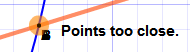
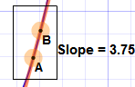

Slope of a Function at a Point
Use this interactive to find the slope at a point. Instructions below.
Instructions
Type your function into the top box ... your function is plotted live.
Now drag the points "A" and "B" to the function line. When they are close they will "snap" to the function.
Bring points "A" and "B" near the point where you want to find the slope.
|
When "A" and "B" are on top of each other the slope could be anything! So keep them a small distance apart. |
 |
|  |
Now Zoom In: by pressing "Fit". Now bring the points closer together. |
Keep zooming and moving the points closer together until you are happy with the answer.
This is the idea behind differential calculus. We can't have a gap of zero (the slope could be anything), but as the gap heads towards zero, the slope heads towards the true slope at that point.
Interesting Functions
Try finding the slope of y = x^2 at:
- x = 1
- x = 2
- x = 3
Try finding the slope of y = ln(x) at:
- x = 1
- x = 1.5
- x = 2
Try finding the slope of y = e^x at:
- y = 1 (x=0)
- y = 1.2
- y = 1.5
Accuracy
There are only a few hundred pixels in either direction, and so the calculations are not totally accurate. But they should give you a good feel for what is going on.
And don't worry, you can often use differential calculus to find an accurate answer!